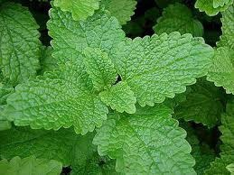

Escolhi essa atividade pela temática de ter que pesquisar plantas que temos no campus, e achar alguma que possa ser medicinal de alguma forma. A curiosidade de procurar a planta certa e a pesquisa me fascinaram bastante; não esperava que fosse algo que me deixaria intrigado da forma que me deixou. Ao longo dela, encontramos plantas que podem ser medicinais sem a adição de químicas ou qualquer tipo de mistura, e isso me fascinou.
